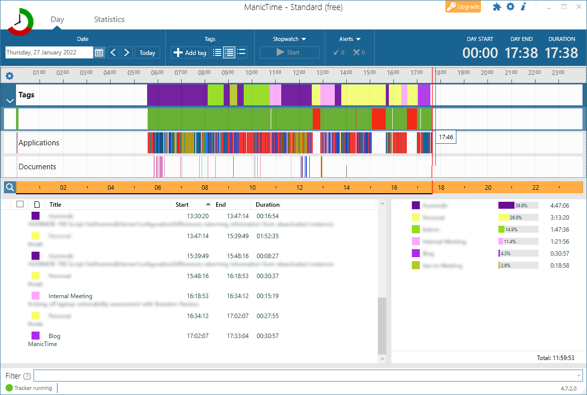
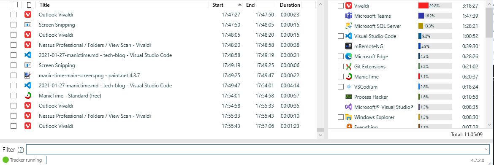
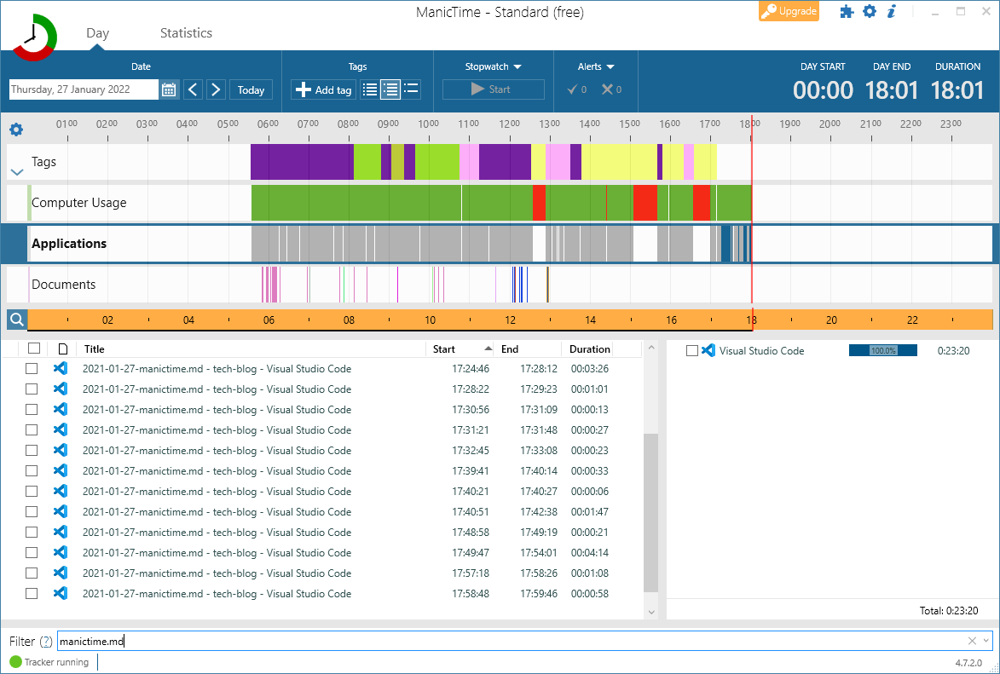
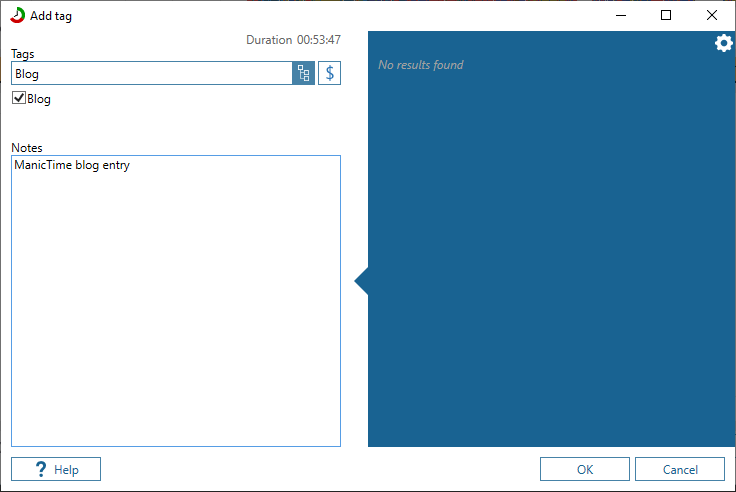

Taming Your Timesheet With ManicTime
A guide on how to save time in capturing timesheets with the assistance of ManicTime
Introduction¶
Skill level required: Beginner
Consider these questions:
- Did I start start my day at 7:30 AM or 7:45 AM?
- Did I spend 15 minutes or 45 minutes looking at a support ticket?
- How long was I out for my lunch break?
- Am I working too many hours or too few hours?
- When I forget to complete my timesheet every day, how do I figure out what I did?
If you answered yes to any of the above questions, and you work on a computer most of the day, then ManicTime is there to answer all of the above questions.
ManicTime Basics¶
In a nutshell, all that ManicTime does is track the duration and time that each window is focused for. So if you answer a call in Teams, reply to emails or get some development work done you can figure out everything that happened after it's happened and you no longer have to guess.

Let us break the UI down into its pieces:
- The first row is custom Tags and comments for each task that you've performed for the day. More on this later.
- The next row is Computer Usage which measures Active (working on the computer) vs Inactive time (e.g. when your computer is locked or you step away for 10 minutes or more).
- The Applications tab shows the focused window throughout the whole day
- The Documents tab shows the name of the currently opened browser window or the current file open in a program like Visual Studio or VSCode.
If you click on any tab, the reporting information changes to that tab. e.g. if I select the Applications tab I can now see how long each window was focused for.

Now where the superpowers come in with this tool is one can filter on the results to get an idea of when they started and ended a task. e.g. I'm going to filter on "manictime.md" I can see when I started writing this blog post

Then I can just highlight and tag the time. First, we type in the project we want to assign the time to, in this case, " Blog" and add a note of what you were doing.

You can also easily drag and drop the start and end times for each tag.
Finally, I can can then use the details in the captured tags for completing my timesheet for the day.
ManicTime Professional Edition¶
These are are the core features of ManicTime and all included in the free version. I haven't needed the professional version of the tool but it does have some enticing features such as:
- Periodic screenshots (every 60 seconds by default) which help you guess what you were busy with at that time.
- A reminder to capture what you did in the past x number of minutes.
- Automatic time tagging using custom rules.
- A whole client/server system for working with a team.
Conclusion¶
Even the free edition of ManicTime is very useful. You know exactly when you started; how long your lunch break was etc... answering all of the questions we started with. When you get to the end of the day, you know exactly what you did, and timesheets become a breeze.
What are you waiting for? Give ManicTime a try.